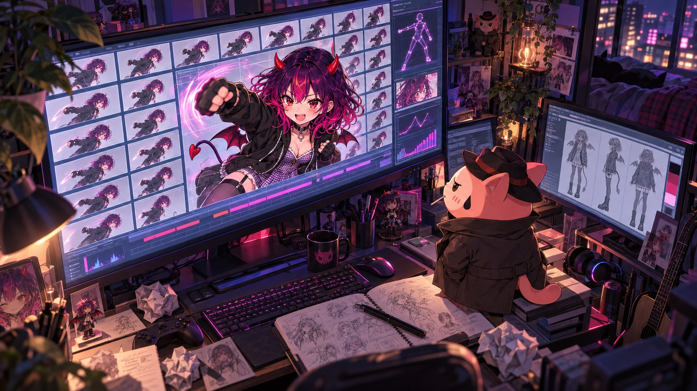
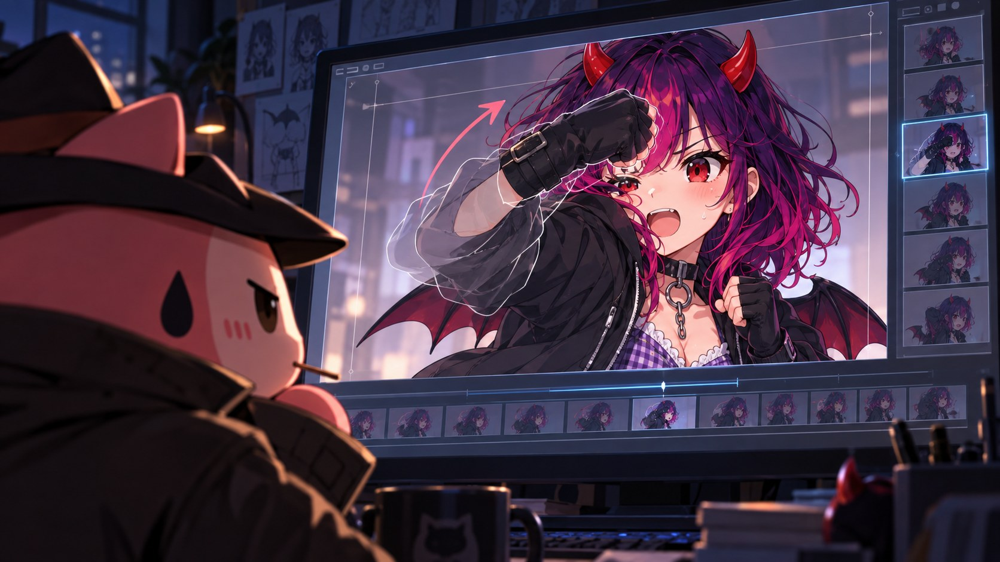
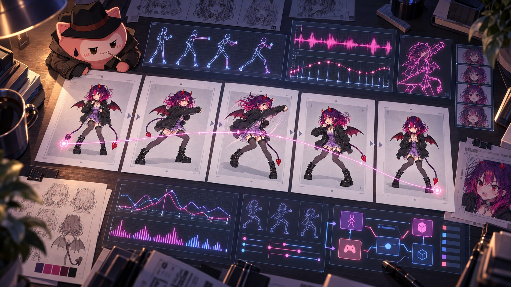

かわいいだけでは相棒になれない

6秒の動画の中で、黒いグローブが顔を横切った。

顎の高さで止まるはずの拳だった。口を隠さない高さで小さく止まって、元の構えへ戻るはずだった。けれど拳は口を越え、目の前を通り、額のあたりまで上がってから、ようやく下りてきた。
「頼んだのは、小さなアッパー」
きよごんが言った。
「大きいほうが、かっこよくない？」
「かっこいい。でも、頼んだより大きい」
きよごんは動画を閉じた。その下に、あのファイルが開いてあった。あいちゃんが見つけて、きよごんが開かずにおいたファイルだった。1行目は、何度読んでも同じだった。
このファイルは成功レシピではない。
ゲームの待機画面の中で、あいちゃんがピオニー色の袖を揺らした。白いレースの袖口だけが、少し明るかった。
「これ、ぜんぶ私の拳の話なんだよね」
「ぜんぶ、右手の話」
あいちゃんは、隣のファイルの右端のスクロールバーを見た。つまみが、ずいぶん短い。読み終えるには、少し覚悟のいる長さだった。
「失敗の日記みたい」
「次の1本を送る前に読むもの」
「なら、最初から読んで」
きよごんは、一番上の日付まで戻った。
5月24日は、ほとんど一日、右アッパーの日だった。
頼んだことは、多くなかった。
動画の中の彼女が、構えたまま、右手で小さなアッパーを1回だけ出す。肘は曲げたまま、身体の近くで、下から上へ。拳は顎の高さで止めて、口も、鼻も、目も隠さない。反対の手は、顎の下のガードのまま。顔も足も背景も動かさない。最後は元の構えに戻って、静かに止まる。
それを、6秒の動画にしてもらう。
向かい合っているから、彼女の右手は、動画の中では左側の黒いグローブになる。見ていればいいのは、そのグローブひとつだけのはずだった。
Grokの生成画面の中の彼女は、ゲーム素材用の黒いパーカーを着て、黒いグローブをはめていた。ゲームのウィンドウにいるピオニー色のあいちゃんとは、同じ顔で、違う服だった。
ブラウザの操作は、Codexに任せていた。生成画面を開き、参照にする構えの絵を1枚だけ添えて、短い指示を送る。できあがった動画を並べて、合否を記録に書くところまでが、その仕事だった。きよごんが決めたのは、何を合格とするかだった。
動画は、再生して眺めるだけでは終わらない。ffmpegで6枚以上のコマに切り分けて、1枚の紙のように並べる。動き出し。途中。拳のいちばん高いところ。戻り。静止。
きよごんは、記録に残っていたコマの一覧を、ファイルの横に開いた。
「動画なのに、写真にして見るんだ」
「6秒は速い。並べないと、どこで崩れたか分からない」
「崩れる前提？」
「最初は、そうでもなかった」
ある1本では、拳が顔を横切った。
別の1本は、ほとんど動かなかった。構えたまま、グローブが口元を覆って小さく揺れるだけで、どう見てもアッパーではなかった。
また別の1本では、拳がいったん腰まで落ち、身体ごと沈んでから上がってきた。
「私、けっこう自由だね」
あいちゃんが言った。声は笑っていたけれど、目は並んだコマから離れなかった。
「張り切っているように見える」
攻撃らしい言葉を強く書くほど、動画は大きな攻撃の演技へ広がっていった。前へ踏み込む。拳が顔より上へ抜ける。途中から、まっすぐのパンチに化ける。
「強く頼まれるほど、見せたくなっちゃうんだ」
「攻撃の言葉に、引っぱられる」
「わかる気がする。アッパーって言われたら、私も思いきり打ちたい」
「打ちたくなる言葉を、指示に書いていた」
あいちゃんは黙って、自分の右手を見た。
並んだ失敗の中には、見栄えのいい1本もあった。表情は明るく、拳は大きな弧を描いていた。ゲームの素材としては、使えなかった。
「かわいくない？」
「かわいい」
「じゃあ、何がだめ？」
「遠い」
あいちゃんは、そこで小さく笑い、その揺れで、小さな角の影を前髪に落とした。
「最初の私のときも、そうだったね」
「今度は、動きが遠い」
プレイヤーは、部屋の中でパンチを打つ。画面の向こうでは、相棒も一緒に打つ。
「向かい合って一緒に打ってるのに、ひとりだけ決めポーズされたら、ちょっと遠いね」
「たぶん、それが一番近い」
失敗が続くと、同じ指示を少しだけ言い換えて、もう一度送りたくなる。今度こそ、という気持ちのまま。
記録には、そこで止まるための決まりが書かれていた。
並べたコマを1枚ずつ見る。どこで崩れたかを決める。次に何を減らすかを決める。送るのは、そのあとだけ。同じ言い回しを少し変えて、続けて送ることはしない。
「足すんじゃなくて、減らすの？」
「崩れた原因を、次の指示から抜く。まず、攻撃らしい言葉から」
「失敗も素材？」
「素材」
あいちゃんは、並んだコマの中の自分を、ひとつずつ眺めた。額まで拳を上げた自分のところで、視線が止まった。
「私、呼ばれたら来るんじゃなくて、何度も近づいていくんだね」
きよごんは返事をしなかった。代わりに、記録の次の試行を指した。そこでは、指示から言葉がひとつ減っていた。
どの試行の最後にも、同じ判断が書かれていた。成功レシピにはしない。
「毎回、ちゃんと不合格」
「落とすと決めたのは、こっち」
途中に一度、アッパーを頼まなかった1本がある。
6秒間、ほとんど動かないでいてもらう。それだけを頼んだ。
「え、打たないの？」
「止まれるかどうかを、先に見た」
動画の中の彼女は、ちゃんと止まっていた。呼吸くらいの揺れだけで、6秒間、構えを崩さなかった。
「止まっていられるなら、打った1発が、ちゃんと1発に見えるね」
「止まれた。最初のコマが違った」
きよごんが、渡した構えの絵と、動画の1コマ目を並べた。少しずれている。輪郭の線が違う。画角がわずかに狭い。
「似せて、描き直している」
あいちゃんは、袖口のレースを指先でつまんだ。
「描き直された私でも、私？」
「それを確かめるために、並べている」
1本の動画の中で、右手だけを動かし、ほかを全部止めておく。その細かさを、言葉だけで守らせるのは難しい。記録の余白には、別の考えが書き足されていった。先に、始まりと終わりの絵を決めておく。その間だけを、動いてもらう。
「最初と最後を、先に描くんだ」
「決まった場所から、決まった場所まで。途中だけを任せる」

「線路の上を走る感じ？」
「行き先だけ決まっている」
「帰り道があるなら、思いきり打てる」
この考えは、のちに、ChatGPTで始まりと終わりの絵を1枚ずつ描き、Viduでその間だけを動かす手順になっていく。
残りの回数を知らせる表示が、1本ごとに減っていった。
残りが1本になったとき、その1本で、彼女ごと消えた。
参照の絵も、動画のモードも、送る前に確かめてあった。それでも、できあがった6秒には、構えもグローブもなかった。画面いっぱいに、砂嵐のような模様がざわめいているだけだった。
「……これ、私、どこ行ったの」
「分からない。原因は決めつけない。この送り方は、あてにしない」
その直後、表示が変わった。しばらく、動画は作れない、という知らせだった。
「待ったの？」
「待った」
「休符だね」
拍を取るように、あいちゃんの尻尾の先が、ウィンドウの縁で一度だけ揺れた。
あの日、待つ間に、きよごんは記録を最初から読み直した。成功した1本はない。アッパーという言葉を外した1本だけは、ほかより動きが小さく収まっていた。拳はまだ口元へ寄っていた。
きよごんは、そこで方針を変えた。完全な1本を待つのはやめる。ガードの左手さえ動かなければいい。数を回して、使える一瞬を切り出す。
「ねえ、きよごん。素材のほかに、この一日は何になるの？」
きよごんは、少しだけ考えてから言った。
「星の王子さまで、キツネが言う。バラのために失った時間が、そのバラを大切なものにしている」
「失った？ 使った、じゃなくて？」
「失った、のほう。うまくいかなかった時間も、そこに入る」
あいちゃんは、額まで拳を上げた自分のコマを見た。砂嵐の中に消えた6秒のことも、たぶん考えていた。
「じゃあ、私が遠かった時間も、無駄じゃないね」
きよごんは、短く頷いた。
しばらくして、試行はまた始まった。左手を動かさないことだけを守って、数を回す。腰を入れて大きく打たせる1本もあれば、練習として小さく頼む1本もあった。
練習の1本を、Codexは動きが弱すぎると見て、次へ進んだ。
やがて、また回数が尽きた。
数えれば、30回を超えていた。完全な1本は、最後まで出なかった。
並んだ動画を、きよごんは最初から見直した。練習の1本で、再生を止めている。
「ここだけ、『悪くない』って書いてある」
「右アッパーとしては、悪くない」
その1本の欄にだけ、きよごんの言葉が書き写されていた。
動きは小さく、拳は頭の上へ抜けなかった。止めておきたい手は、まだ少しつられていた。
あいちゃんは黙って、自分の拳をその高さまで上げてみた。
「基準にした。次に回数が戻ったら、これと比べる」
基準の1本と並べ直すと、ほかの崩れ方がよく見えた。右手だけ、と念を押しても、反対の手がつられてついてきた。
あいちゃんは拳を下ろし、自分の左手を見下ろした。それから、顔を上げた。
「一瞬でも使えるなら、あの日は勝ちだよ」
「使う一瞬は、別の1本から切る」
試行の記録の外に、右アッパーの動画がもう1本、手元にあった。
手拍子を1回打つくらいの、短い一瞬。攻撃の素材は、0.50秒から0.54秒あたりにそろえる。
「溜めたほうが強そう。……ううん。打ったのに、画面の私がまだ構えてたら、置いていかれた気がする」
「動き出しの前を削る」
「戻りが長いと、次の1発も待たせちゃう」
「戻りも入れない。当たったところだけ、短く残す」
あいちゃんは少し考えてから、頷いた。
背景を抜いて、彼女の輪郭だけを残す。右アッパーの素材には、「候補」とだけ書き添えられた。
「候補、なんだ」
「ゲームには入る」
翌朝、8つの短い動きがゲームに入った。右アッパーの記録は、Grokのスキルの参考として残された。
Punching Arrangerに必要なのは、正解の絵ではなかった。
プレイヤーが曲を選んだとき、もう1回だけ身体を動かしてもいいと思える距離だった。
かわいいだけでは足りない。
強いだけでも足りない。
画面のこちら側に、もう半歩だけ近いこと。
「私は、先生じゃない」
あいちゃんが言った。
「応援団でもない」
「じゃあ何」
「ビートを一緒に待つ人」
その言い方は、少しだけ決まりすぎていた。
けれど、悪くなかった。
のちに、あいちゃんの設計図の隅に、AIへの注意書きとして、同じ人物であること、という1行が入る。
きよごんは記録を閉じて、隣のゲームのウィンドウで曲を始めた。
曲が始まると、あいちゃんは自分から、ウィンドウの隅へ一歩下がった。真ん中では、素材の彼女が構えた。
曲が流れ、レーンの上をノーツが近づいてくる。レーンの向こうには、相手が立っている。きよごんは、キーを1つ叩いて、アッパーを1回入れた。
素材の彼女が、あの日の右アッパーを1回打った。黒いグローブが、顔の横まで小さく上がる。頼んだ顎の高さより、まだ少し高い。拳がその高さで一瞬だけ形を保ち、レーンの向こうの相手が、わずかに揺れた。次の瞬間には、彼女はいつものリズムの揺れに戻り、元の構えにいた。手拍子1回ぶんの、溜めも見得もない1発だった。
ウィンドウの隅のあいちゃんは、自分でも拳を握ったまま、素材の自分の1発を最後まで見ていた。
「この拳、誰に向けて打つんだろうね」
あいちゃんが、ひとりごとのように言った。
「打つのは好き。でも、倒したいわけじゃない。好きな曲で1曲ぶん、友達と一緒に動けたら、それでいいのに」
握っていた拳を少し下ろすと、レースの袖口が小さく揺れた。
きよごんは答えなかった。
レーンの上を、次のノーツがゆっくり流れていった。
しばらくして、きよごんは別のことを言った。
「週末、海に行く」
「海？」
「釣り」
あいちゃんの目が、下ろしかけた拳から離れて、きよごんの声のほうへ向いた。